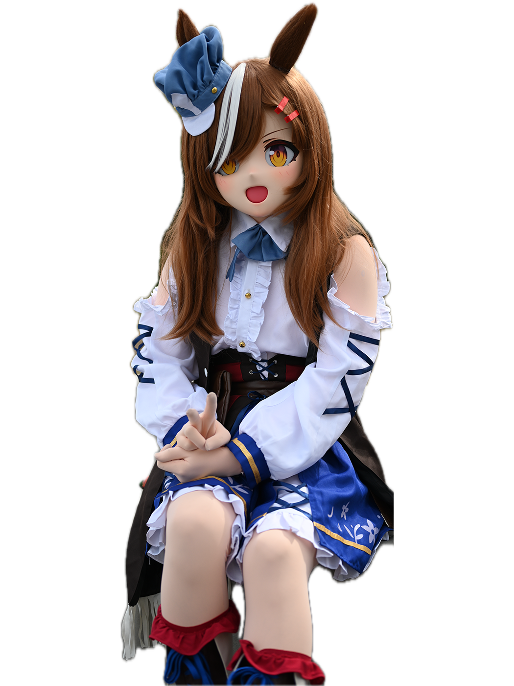

I design from the real — prototyping, testing, and iterating until the thing works.
Click a figure to switch persona

I'm an Interaction Design student at Sheridan College, based in Oakville, ON. I prototype, test, and iterate — treating software and electronics as craft, not magic. My work spans UX research, responsive web design, full-stack prototyping, and music production.
Outside the portfolio, I compose and produce original music under the name Antirender — an alter ego for the creative work that doesn’t fit neatly into a case study.
The designer. Prototyping, usability testing, clear documentation. Focused on real constraints, evidence-based iteration, and things that work in the hand.
Music, experiments, and the things that don’t fit neatly into a portfolio. 36 original tracks across 7 self-released albums, published on Spotify and streaming platforms.
I design from the real. I keep what’s real, using limits to define form. If beauty shows up, it’s because the thing works. Value should be discovered in the hand and over time. I treat software and electronics as craft, not magic.
As Antirender, I write and produce original tracks across genres using Logic Pro and Ableton Live — end-to-end from composition to basic mastering.